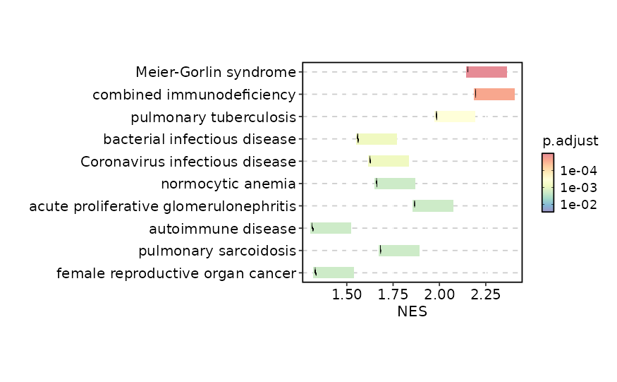
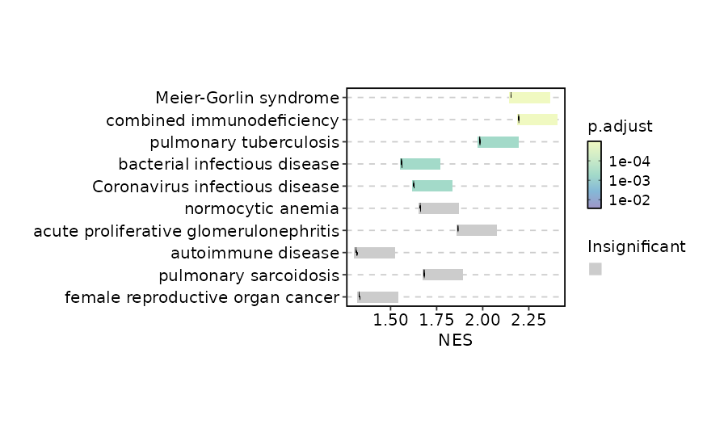
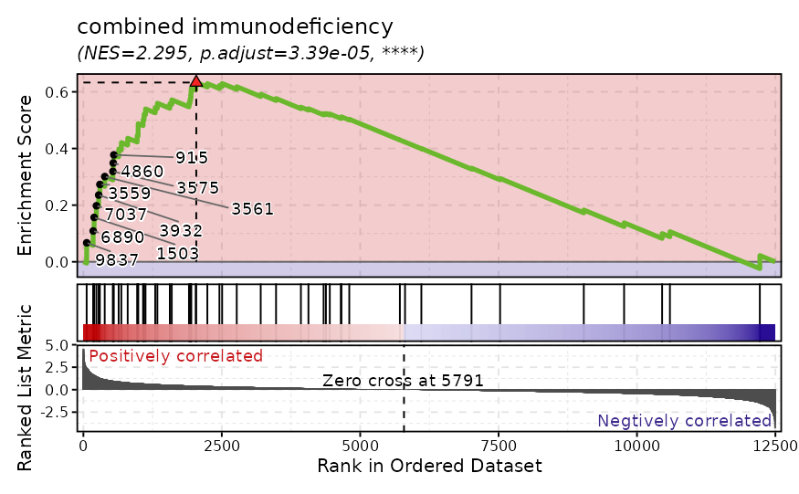
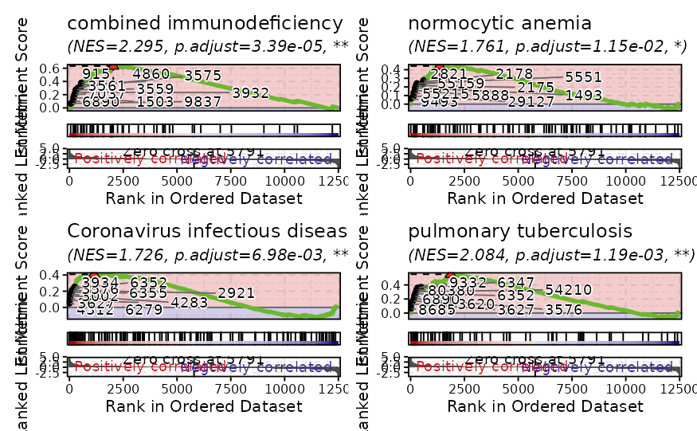

Produces a summary dot plot of GSEA (Gene Set Enrichment Analysis) results.
Each row represents a gene set (term), positioned along the x-axis by its
Normalized Enrichment Score (NES). Dot colour encodes the significance level
(typically -log10(p.adjust)) on a continuous gradient, and each row
includes a miniature line plot showing the gene ranks or running enrichment
score for that term's gene set.
The function supports both DOSE and fgsea package output
formats via the in_form parameter. Terms can be ranked and selected
by a significance metric (top_term, metric), with
non-significant terms rendered in grey. The per-term line plots can show
either the raw preranked gene statistics (line_by = "prerank") or
the running enrichment score (line_by = "running_score").
Usage
GSEASummaryPlot(
data,
in_form = c("auto", "dose", "fgsea"),
gene_ranks = "@gene_ranks",
gene_sets = "@gene_sets",
top_term = 10,
metric = "p.adjust",
cutoff = 0.05,
character_width = 50,
line_plot_size = 0.25,
metric_name = metric,
nonsig_name = "Insignificant",
linewidth = 0.2,
line_by = c("prerank", "running_score"),
title = NULL,
subtitle = NULL,
xlab = NULL,
ylab = NULL,
alpha = 0.6,
aspect.ratio = 1,
legend.position = "right",
legend.direction = "vertical",
theme = "theme_this",
theme_args = list(),
palette = "Spectral",
palcolor = NULL,
palreverse = FALSE,
seed = 8525,
...
)
GSEAPlot(
data,
in_form = c("auto", "dose", "fgsea"),
gene_ranks = "@gene_ranks",
gene_sets = "@gene_sets",
gs = NULL,
sample_coregenes = FALSE,
line_width = 1.5,
line_alpha = 1,
line_color = "#6BB82D",
n_coregenes = 10,
genes_label = NULL,
label_fg = "black",
label_bg = "white",
label_bg_r = 0.1,
label_size = 4,
title = NULL,
subtitle = NULL,
xlab = NULL,
ylab = NULL,
combine = TRUE,
nrow = NULL,
ncol = NULL,
byrow = TRUE,
seed = 8525,
axes = NULL,
axis_titles = axes,
guides = NULL,
design = NULL,
...
)Arguments
- data
A data frame.
- in_form
The format of the input data. See
GSEASummaryPlotfor details.- gene_ranks
A named numeric vector of gene-level rank statistics, with gene identifiers as names. Used to construct the per-term line plots. If a character string starting with
"@", the attribute ofdatawith that name (minus the"@") is used as the gene ranks vector.- gene_sets
A named list of gene sets. Each name must correspond to an
IDindata, and each element is a character vector of gene identifiers. A GSEA ridge plot is generated for each gene set in the list. If you only want to plot a subset of gene sets, subset the list before passing it to this function. If a character string starting with"@", the attribute ofdatawith that name (minus the"@") is used.- top_term
Integer specifying the number of top terms to display, ranked by
metric. IfNULL, all terms are shown.- metric
Character string specifying the column name used to rank terms and assess significance. Typically
"p.adjust"or"pvalue". Terms are ranked by this column (ascending, lower is better) whentop_termis set. The same column is transformed to-log10(metric)for the colour gradient.- cutoff
Numeric threshold for the
metriccolumn. Terms with values below this cutoff are coloured on a gradient; terms above are drawn in grey ("grey80") and labelled as insignificant vianonsig_name. Default is0.05. IfNULL, all terms are treated as significant.- character_width
Integer specifying the maximum character width for wrapping term descriptions on the y-axis. Default is
50.- line_plot_size
Numeric controlling the size of the per-term miniature enrichment plots embedded in each row. Expressed as a fraction of the plot panel dimensions. Default is
0.25.- metric_name
Character string for the colour bar legend title. Defaults to the value of
metric.- nonsig_name
Character string for the legend entry label used for non-significant terms. Default is
"Insignificant".- linewidth
Numeric specifying the line width within the per-term miniature enrichment plots. Default is
0.2.- line_by
The method used to compute the per-term line plots:
"prerank"(default): Use the gene ranks as the bar heights (raw ranking metric)."running_score": Use the running enrichment score computed bygsea_running_score().
- title
A character string specifying the title of the plot. A function can be used to generate the title based on the default title. This is useful when split_by is used and the title needs to be dynamic.
- subtitle
A character string specifying the subtitle of the plot.
- xlab
A character string specifying the x-axis label.
- ylab
A character string specifying the y-axis label.
- alpha
A numeric value specifying the transparency of the plot.
- aspect.ratio
A numeric value specifying the aspect ratio of the plot.
- legend.position
A character string specifying the position of the legend. if
waiver(), for single groups, the legend will be "none", otherwise "right".- legend.direction
A character string specifying the direction of the legend.
- theme
A character string or a theme class (i.e. ggplot2::theme_classic) specifying the theme to use. Default is "theme_this".
- theme_args
A list of arguments to pass to the theme function.
- palette
A character string specifying the palette to use. A named list or vector can be used to specify the palettes for different
split_byvalues.- palcolor
A character string specifying the color to use in the palette. A named list can be used to specify the colors for different
split_byvalues. If some values are missing, the values from the palette will be used (palcolor will be NULL for those values).- palreverse
A logical value indicating whether to reverse the palette. Default is FALSE.
- seed
A numeric seed for reproducibility. Passed to
validate_common_args().- ...
Additional arguments.
- gs
Character vector of gene set
IDs to plot. IfNULL(default), all gene sets ingene_setsthat appear indata$IDare plotted.- sample_coregenes
Logical; if
TRUE, core enrichment genes are sampled randomly for labelling. IfFALSE(default), the firstn_coregenescore enrichment genes are used.- line_width
Numeric specifying the line width for the running enrichment score curve. Default is
1.5.- line_alpha
Numeric alpha transparency for the running score line and hit indicator bars. Default is
1.- line_color
Character string specifying the colour of the running enrichment score line. Default is
"#6BB82D".- n_coregenes
Integer specifying the number of core enrichment genes to label on the running score plot. Default is
10. Ignored whengenes_labelis provided.- genes_label
Character vector of specific gene names to label on the running score plot. When provided,
n_coregenesis ignored.- label_fg
Character string specifying the text colour of gene labels. Default is
"black".- label_bg
Character string specifying the background colour of gene labels. Default is
"white".- label_bg_r
Numeric specifying the corner radius of the label background. Default is
0.1.- label_size
Numeric specifying the font size of the label text. Default is
4.- combine
Logical; when
TRUE(default), returns a combinedpatchworkobject. WhenFALSE, returns a named list of individualpatchworkobjects (one per gene set).- ncol, nrow
Integer number of columns / rows for the combined layout (passed to
combine_plots()).- byrow
Logical; fill the combined layout by row. Default
TRUE(passed tocombine_plots()).- axes
A character string specifying how axes should be treated across the combined layout (passed to
combine_plots()).- axis_titles
A character string specifying how axis titles should be treated across the combined layout. Defaults to
axes.- guides
A character string specifying how guides (legends) should be collected across panels (passed to
combine_plots()).- design
A custom layout design for the combined plot (passed to
combine_plots()).
Value
A ggplot object with height and width
attributes (in inches) attached.
A patchwork object when combine = TRUE, or a named
list of patchwork objects when combine = FALSE. Each
individual plot has height and width attributes in inches.
Examples
# \donttest{
data(gsea_example)
# Default summary dot plot with preranked gene statistics
GSEASummaryPlot(gsea_example)

# Use running enrichment score for per-term line plots
GSEASummaryPlot(gsea_example, line_by = "running_score")
# Raise the significance cutoff (all terms are coloured)
GSEASummaryPlot(gsea_example, cutoff = 0.01)

# }
# \donttest{
data(gsea_example)
# Single gene set
GSEAPlot(gsea_example, gene_sets = attr(gsea_example, "gene_sets")[1])

# Multiple gene sets arranged in a grid
GSEAPlot(gsea_example, gene_sets = attr(gsea_example, "gene_sets")[1:4])

# }